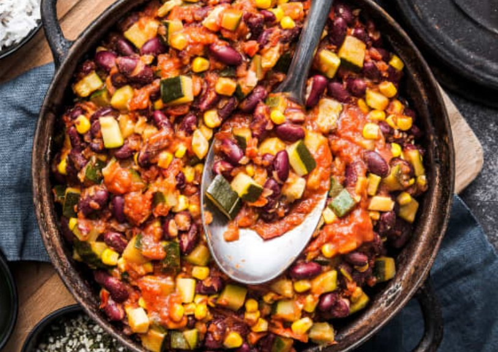

Chili sin carne (Thermomix)
Ingrédients
6×
- 300 g de poivron rouge ou vert en morceaux
- 100 g d'oignon coupé en 2
- 1 gousse d'ail
- 10 g d'huile d'olive
- 500 g de courgettes en petits morceaux
- 1 c. à c. de cumin
- 1 c. à c. de paprika
- 400 g de coulis de tomates
- sel
- poivre
- 500 g de haricots rouges
- 140 g de maïs

Préparation
Étape 1
Mettre 300 g de poivron rouge ou vert en morceaux, 100 g d'oignon coupé en 2 et 1 gousse d'ail dans le bol, mixer 5 sec/vitesse 5.
Étape 2
Ajouter 10 g d'huile d'olive, 500 g de courgettes en petits morceaux, 1 c. à c. de cumin et 1 c. à c. de paprika, cuire 5 min/120ºC/vitesse 1.
Étape 3
Ajouter 400 g de coulis de tomates, sel et poivre, cuire 8 min/120ºC/vitesse spatule.
Étape 4
Ajouter 500 g de haricots rouges et 140 g de maïs, cuire 5 min/110ºC/vitesse spatule.
Résumé
300 g de poivron rouge ou vert en morceaux
100 g d'oignon coupé en 2
1 gousse d'ail
mixer 5 sec/vitesse 5
10 g d'huile d'olive
500 g de courgettes en petits morceaux
1 c. à c. de cumin
1 c. à c. de paprika
cuire 5 min/120ºC/vitesse 1
400 g de coulis de tomates
sel
poivre
cuire 8 min/120ºC/vitesse spatule
500 g de haricots rouges
140 g de maïs
cuire 5 min/110ºC/vitesse spatule